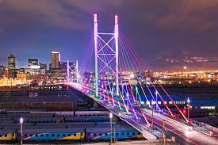
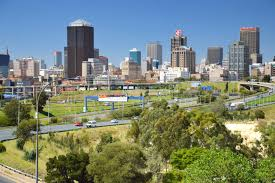

Johannesburg
Johannesburg is a city in south africa, located in the northeast of the country on a flat plateau. It is the conutry's chief industrial and finacial metropils, and the largest and most populous city in south africa.
It is also known as Jozi,Joburg, or "The City of Gold". Johannesburg was founded in 1886, following the discovery of gold. It is not a coastal city, and does not overlook any sea or ocean. Johannesburg is not to be confused with Johannesburg, a small community in lllinois USA.
Reasons Where Johannesburg located there
Johannesburg is located in the mineral-rich Witwatersrand hills, which is the epicentre of the
international-scale mineral, gold and diamond trade. The city was established in 1886, following the discovery
of gold, on the location of johannesburg are:
Existence of minerals/discovery of gold in the Witwatersrand resulted in a rush of people to the area
Availability of energy i.e coal which was an important source of energy to the mines, industries and homes.
Exellent location in the plain making construction work easy.
-


Why I choose Johannesburg Urban Settlement
The city has a rich history and culture and is also home to some of the best schools and universities in the country.
Its sprawing soweto township once Nelson Mandela and Desmond Tutu stayed there.